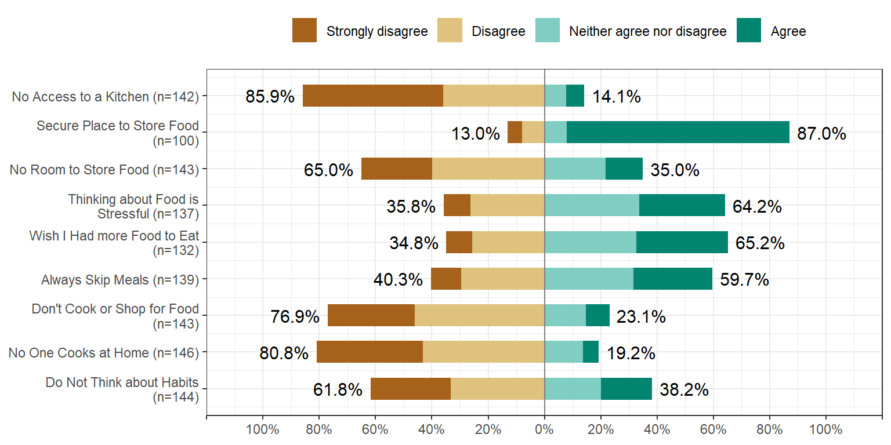
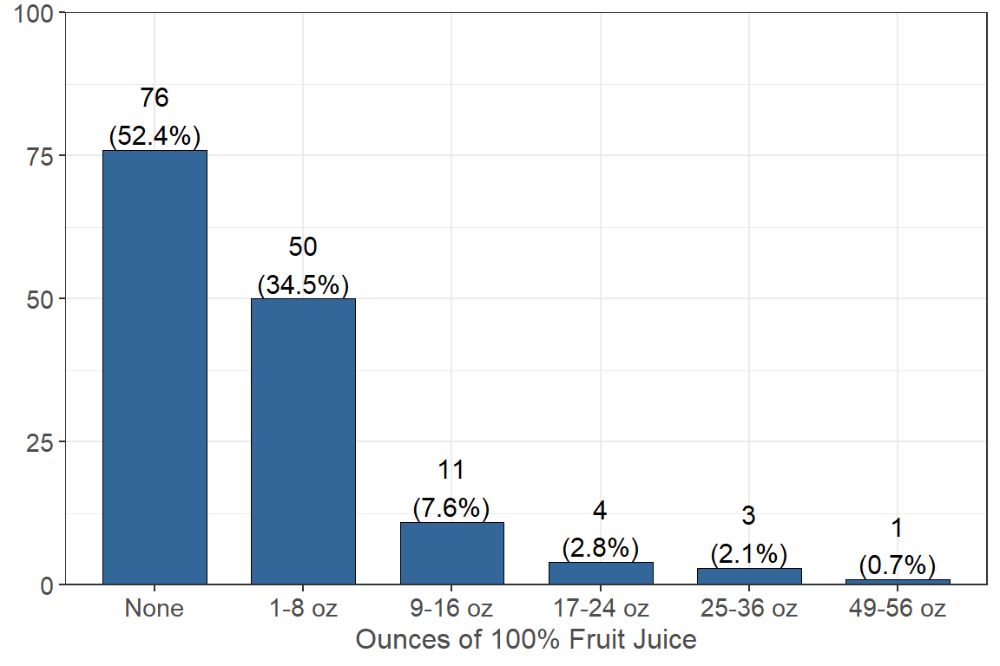
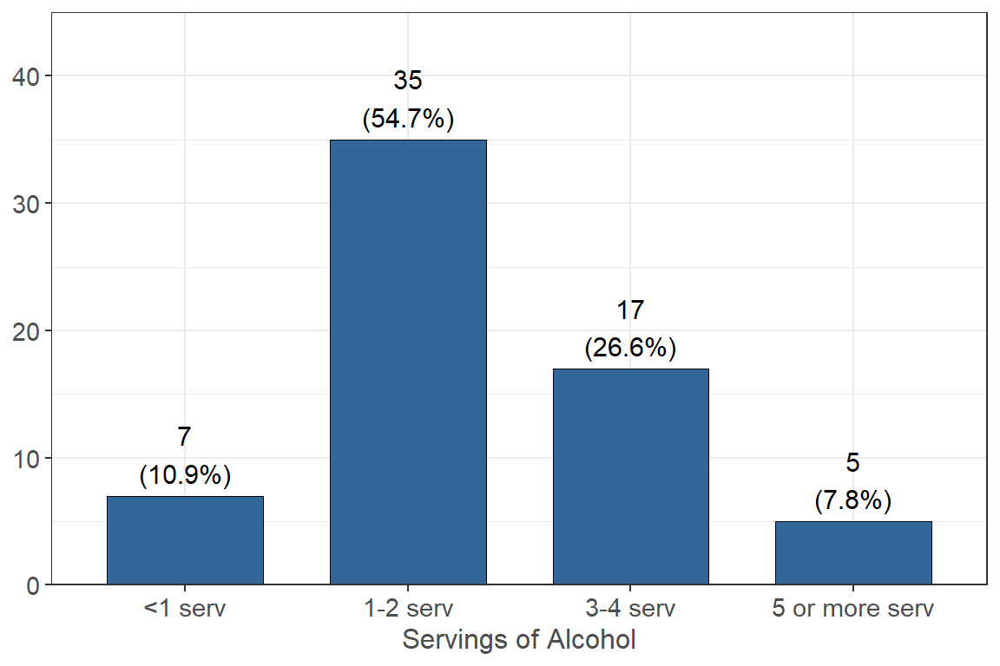

Health
Physical Activity
On how many of the past 7 days did you
Do moderate-intensity cardio or aerobic exercise (caused a noticeable increase in heart rate, such as brisk walk) for at least 30 minutes?

One fourth, or 25.0% (n = 37) of respondents, reported that they do not do any days a week of cardio or aerobic excercise for at least 30 minutes, 11.5% (n = 17) reported that they exercise for 1 day, and 18.9% (n = 28) reported that they excerise for 2 days.
Do vigorous-intensity cardio or aerobic exercise (caused large increases in breathing or heart rate, such as jogging) for at least 20 minutes?

36.5% (n = 54) of respondents reported that they did not do vigorous-intensity cardio for at least 20 minutes per day in the past 7 days, 18.2% (n = 27) reported they did for 1 day, and 20.9% (n = 31) reported they did for 2 days.
Do vigorous-intensity cardio or aerobic exercise (caused large increases in breathing or heart rate, such as jogging) for at least 20 minutes?

Almost half, or 47.3% (n = 70) of respondents, that they did not do 8-10 strength training exercises per day in the past 7 days, 11.5% (n = 17) reported they did for 1 day, and 16.2% (n = 24) reported they did for 2 days.
Smoking
Have you smoked at least 100 tobacco cigarettes in your entire life?

Only 7.4% (n = 11) of respondents reported that they have smoked over 100 cigarettes in their entire life and 92.6% (n = 137) reported they have not.
How frequently do you currently smoke tobacco cigarettes?
3.4% (n = 5) reported that they smoke cigarettes on some days and 96.6% (n = 142) reported that they do not smoke cigarettes.
Sleep
On average, during the academic year, how many hours of sleep do you get in a typical 24-hour period during the week?
| Hours | n | % |
|---|---|---|
| 0 | 2 | 1.35 |
| 4 | 8 | 5.41 |
| 5 | 33 | 22.30 |
| 6 | 53 | 35.81 |
| 7 | 26 | 17.57 |
| 8 | 15 | 10.14 |
| 9 | 2 | 1.35 |
| 10 | 4 | 2.70 |
| 12 | 1 | 0.68 |
| 13 | 1 | 0.68 |
| 15 | 2 | 1.35 |
| 24 | 1 | 0.68 |
On average, during the academic year, howmany hours of sleep do you getin a typical 24-hour period during weekends?
| Hours | n | % |
|---|---|---|
| 0 | 1 | 0.68 |
| 1 | 1 | 0.68 |
| 2 | 1 | 0.68 |
| 4 | 2 | 1.35 |
| 5 | 11 | 7.43 |
| 6 | 15 | 10.14 |
| 7 | 23 | 15.54 |
| 8 | 36 | 24.32 |
| 9 | 26 | 17.57 |
| 10 | 17 | 11.49 |
| 11 | 3 | 2.03 |
| 12 | 5 | 3.38 |
| 13 | 2 | 1.35 |
| 15 | 2 | 1.35 |
| 16 | 1 | 0.68 |
| 18 | 1 | 0.68 |
| 20 | 1 | 0.68 |
On average, how many times per month do you feel deprived of sleep?
| Days | n | % |
|---|---|---|
| 0 | 3 | 2.03 |
| 1 | 4 | 2.70 |
| 2 | 5 | 3.38 |
| 3 | 10 | 6.76 |
| 4 | 13 | 8.78 |
| 5 | 17 | 11.49 |
| 6 | 9 | 6.08 |
| 7 | 4 | 2.70 |
| 8 | 8 | 5.41 |
| 9 | 1 | 0.68 |
| 10 | 10 | 6.76 |
| 11 | 1 | 0.68 |
| 12 | 5 | 3.38 |
| 13 | 3 | 2.03 |
| 14 | 1 | 0.68 |
| 15 | 14 | 9.46 |
| 16 | 2 | 1.35 |
| 17 | 1 | 0.68 |
| 18 | 3 | 2.03 |
| 20 | 8 | 5.41 |
| 21 | 1 | 0.68 |
| 22 | 1 | 0.68 |
| 23 | 1 | 0.68 |
| 24 | 2 | 1.35 |
| 25 | 4 | 2.70 |
| 26 | 1 | 0.68 |
| 27 | 2 | 1.35 |
| 29 | 1 | 0.68 |
| 30 | 13 | 8.78 |
Select the activities that cause you to feel deprived of sleep
| n | % | |
|---|---|---|
| Studying or finishing coursework | 142 | 94.7 |
| Working a paid, or unpaid job or internship | 75 | 50.0 |
| Attending social activities or events | 69 | 46.0 |
| Spending time with family or friends | 66 | 44.0 |
| Watching movies, playing games, social media etc. | 70 | 46.7 |
| Other | 14 | 9.3 |
How frequently do you feel tired while at work or school?

Have you fallen asleep in class in the past 12 months?

How many days in the past month have you experienced heightened anxiety, stress, depression and/or problems with emotions?

By Gender Identity
 Two respondants selected Gender Queer or Gender-Nonconforming One respondant selected Gender Unlisted
Two respondants selected Gender Queer or Gender-Nonconforming One respondant selected Gender Unlisted
Have you received or tried to receive mental health services over the past 12months?

Food & Nutrtion
“In the last 12 months, the food that (I/we) bought just didn’t last, and (I/we) didn’t have money to get more.” Was that often, sometimes,or nevertrue for (you/your household)?

“In the last 12 months, (I/we) couldn’t afford to eat balanced meals.” Was that often, sometimes, or never true for (you/your household)?
In the last 12 months, did you or other adults in your household,ever cut the size of your meals or skip meals because there wasn’t enough money for food?
How often did this happen—almost every month, some months but not every month, or in only 1 or 2 months?
In the last 12 months, did you ever eat less than you felt you should because there was not enough money for food?

How often did this happen—almost every month, some months but not every month, or in only 1 or 2 months?

In the last 12 months, were you ever hungry but you did not eat because there wasn’t enough money for food?

How often did this happen—almost every month, some months but not every month, or in only 1 or 2 months?

In the last 12 months, did you lose weight because there wasn’t enough money for food?

In the last 12 months, did (you/you or other adults in your household) ever not eat for a whole day because there wasn’t enough money for food?
How often did this happen—almost every month, some months but not every month, or in only 1 or 2 months?
Food Insecure
Add copyright info to the footer here.